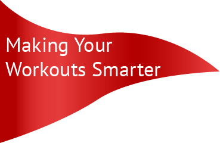
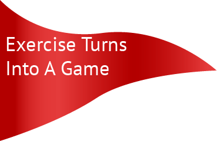
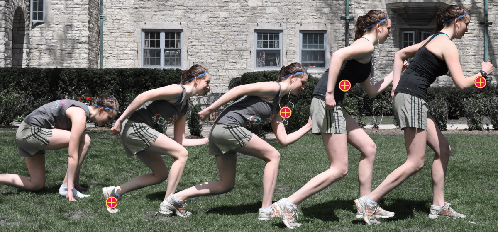
Graphic by Denise Lu.Rubber soled running shoes were invented in 1832 when Wait Webster patented vulcanization, the process by which heat fuses rubber to cloth. These shoes got their name due to their quiet soles, allowing thieves to “sneak” around while wearing them. Since then, sneakers have become widespread, with new developments including minimalist and five finger shoes.
The Sony Walkman was the first portable music player invented, capable of playing audiocassette tapes. Since then, a series of updated and innovative products have been developed, giving individuals the capability to listen to music while on the go. These developments include the Apple iPod, and the Microsoft Zune in addition to Smartphones, which now also have the capacity to double as a phone and music player.
Sweat-wicking fabric was coined in 1998 with the goal of inventing a fabric focused on keeping individuals cooler throughout their workout. This water-resistant material pulls moisture away from the body, and speeds up evaporation. Sweat-wicking fabrics are now widely used in a variety of different products including shirts, shorts and sweatbands.
GPS watches were invented in 2010 as an addition to the growing field of exercise technology. Originally very large and bulky, these watches have been progressively updated and now bear resemblance to standard watches. These watches have wide capabilities, including measuring heart rate, calories burned, distance run and location. Today, many different companies sell GPS watches, including Nike, Garmin and Magellan. These watches are updated with new features multiple times a year, and give the athlete the ability to track their progress without extra-added bulk.
The wearable fitness technology industry has become widespread and is quickly growing, according to an August 2012 study by IM Research, stating that wearable technology is project to be a $6 billion industry by 2016.
After the Nike FuelBand debuted in February 2012, Nike's equipment division had an 18 percent rise in profits according to Nike's income statement. The band boasts a variety of tracking features including the number of steps a user takes and number of calories burned during a workout. Similarly, Garmin fitness sales went up 2 percent in the recent quarter. At the recent Consumer Electronics Show held on Jan. 9, dozens of companies presented new fitness and health technologies.
These upward trends demonstrate an increased appeal of wearable fitness technologies in the most recent calendar year, and project a likely chance of growth in the future.
Jeff Contract, head trainer at Sport&Health Gym in Washington D.C., said although exercise technology can't replace the versatility of a trainer, these serve as important motivational tools.
"Any toy or gimmick that gets people moving is good." Contract said. "It doesn't matter too much what the app or gimmick or technology thing is doing or what it measuring. At the end of the day, more people need to spend more time moving and less time sitting."
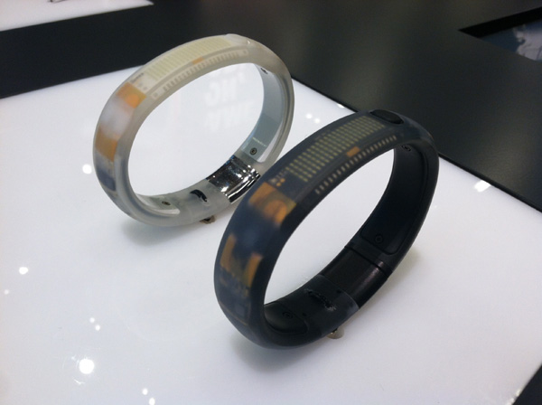
The Nike FuelBand is $149 and comes in three different colors: black, black ice and white ice.
Companies are trying to take advantage of this growing market opportunity through developing new and innovative products meant to help individuals track and motivate themselves to workout. These new technologies include everything from GPS running watches and color-changing shirts to heart rate monitors and portable music players. Although some consumers are buying into the trend, others are far from impressed.
Weinberg sophomore Jason Riddle, member of the Northwestern Triathlon Team, said technology is a necessity when trying to measure your progress. Riddle uses several different types of wearable technology including a fitness watch and heart rate monitor.
"It really helps you to see how much you've improved and figure out if you should be running faster or slower." Riddle said. "It actually really helps."
Other consumers choose to workout only with music. Communication junior Andy Garden said although the Nike FuelBand has some interesting features, he doesn't think it's worth the price.
"Its $150 for a watch that doesn't look like a watch," Garden said. "It is selling a healthy lifestyle for $150. Students aren't as concerned about fuel count as they are about telling time."
Garden wore the watch during Northwestern University Dance Marathon, but only used it as a watch. He said its other features distract him while running. Garden uses only an iPod when working out.
Communication junior Mitch Johnson invested in the FuelBand after seeing someone wearing it on the 'L.' Johnson said he was working 40 hours a week and did not realize his lack of activity.
"I would leave work and realize I didn't do anything," Johnston says. "The FuelBand would motivate me. I used it pretty consistently over the summer."
He said the FuelBand served as his impetus to becoming more active despite the time constraints of a job.
Weinberg sophomore Kaitlin Barr, a member of the Northwestern University Soccer Team said although her coach tried to initiate the use of heart rate monitors during their season, their purpose was never made clear and nothing was ever done with the data recorded.
However, as more fitness technology products are developed, these student's viewpoints may be considered anomalies. The field of fitness technology is continuing to grow in popularity and is likely to increase exponentially over the next several years, Contract said.
"Most people, when they go work out, don't have a plan. They don't really know how to accomplish the goals they set for themselves," Contract said. "They develop a routine that's comfortable for them, not based on what they need. Everyone needs to know if they're working out effectively or not and make sure they're doing things the right way, and technology could help with that."
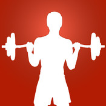
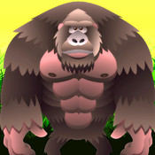
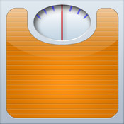
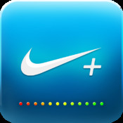
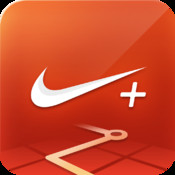
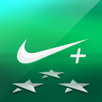
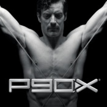
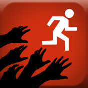
You have never run a day in your life, but all your friends are running 5Ks and you want to too. With Couch to 5K, you can select one of several virtual trainers to get you started and keep you motivated. They will give you daily workouts to perform in order to build your stamina for a 5K. You can share your accomplishments via Facebook, so your friends can cheer you on as well. The app will even provide a list of 5Ks in your area when you're ready for your big day!
Price: $1.99
You like the social media aspect of working out, but don't want to clutter your Facebook newsfeed with updates. Fitocracy acts as a social network as well as a fitness app where you can connect with other users who have the same fitness goals as you. Based on your goals, you will get different badges when you achieve them.
Price: Free
Full Fitness is like a pocket textbook on workouts targeting different muscle structures. There are pictures, videos, and text directions, so even if you've never lifted weights a day in your life, you can learn how to do different exercises properly. You can create your own workout, or select from preset routines. There are also tracking features so you can record your workout and view changes over time.
Price: $1.99
You want to work out, but don't want to drop money on weights and equipment you can't be sure you will use. Luckily, Gorilla Workout provides exercises you can do using just your body weight. Video tips on push-ups, sit-ups, squats and more are available. You can select your difficulty level with higher levels adding more sets and reps to your workout.
Price: $0.99
You're the kind of person who likes to know the fat content on a box set of sushi, or how many calories you can burn by skipping. With Lose It! you can enter what food you eat and what kind of exercise you perform, and the app will tell you nutritional information like calories consumed and calories burned. You can set a weekly budget and connect with your friends to keep one another accountable.
Price: Free
You bought the Nike+ FuelBand, and now you need the app to unlock its full potential. The FuelBand automatically connects to the app so you can see how far you've run and how many calories you've burned on a bigger screen. It will convert this data into NikeFuel which lets you know how active you're being. See how you stack up against friends and strangers on the leaderboard.
Price: Free (requires Nike FuelBand, $149)
You like Nike, but don't have the cash to shell out for a pair of shoes or the FuelBand. Nike+ Running tracks your workout using what you already have: your phone. The app will provide a map of your run using GPS and you can connect via Facebook to publish your progress. If your friends like or comment on your updates, you will hear their encouragements while you run.
Price: Free
You have a sweet pair of Nike+ shoes and this app allows you to track everything and everything about your workouts. Sensors in the shoes connect to the app so you can see how far you run and how you stack up again other people in the Nike+ network. It converts your workout to NikeFuel, which Nike claims to be a standardized measure of activity.
Price: Free (requires Nike Sport Sensor, $30)
You succumbed to a late night infomercial binge and now find yourself with 12 DVDs of P90X. But you're not always home to do the workouts, and paper is so old-school for keeping track of your progress. The P90X app works in tandem with the DVDs and provides a way to record your workouts digitally. You can also budget your nutrition information if you're on a special diet like bulking up protein or cutting down on carbs.
Price: $0.99 (for a limited time)
You're the kind of person that loves to travel, but can't seem to get away. With Teemo you can team up with friends and go on virtual adventures to places such Mount Everest or the Mojave Desert. By performing small exercises, you can build up points that advance your team on its journey. The more people who work out, the farther you travel.
Price: Free (regularly $1.99)
You love zombie video games like Left For Dead, and have always wondered if you could outrun the undead in real life (you know, just in case). With Zombies, Run! you star in your own zombie apocalypse as a runner who is out gathering supplies for survivors. Interspersed with your music are audio tracks that give backstory of your character, tell you when you've picked up supplies like medicine and food, and alert you to the presence of a zombie horde.
Price: $3.99 (limited time offer)
Amy Jo Kim, game designer, at Casual Connect Seattle, 2011
"Use feedback and rewards to support intrinsically-motivating activity"
Gabe Zichermann, entrepreneur and author, at TEDxKids, Brussels, 2011
"Those driving the gamification movement forward are advocating for a different world... It's a world where there are rewards everywhere for actions that people take."
Charlie Kim, CEO of NextJump, at Gamification Summit San Francisco, 2012
"People who know each other tend to motivate each other better"
Search "exercise" in the iTunes store and you'll be scrolling through a blindingly huge list of a wide array of apps that all claim to help improve your exercise regiment. Gamification of exercise isn't new, but with the recent advanced technology of mobile apps, there's a spike in the sprint for creating the best app for fitness.
An age-old concept, gamification can be seen from basic everyday structures like ranks within the military to more complex renderings in contexts like an app that motivates people to exercise through incentives.
Casper Harteveld, an assistant professor of game design at Northeastern University, explains that gamificaiton can take on many forms. "It's often associated with scores or badges or achievements, but those are not necessarily the only game elements you can recognize," Harteveld says. "There are many more game elements of how you engage players, what players do inside games that you could harness outside of a game context."
On the fitness front, Fitocracy is a popular app that recently surpassed a million users. "I came up with the idea to turn fitness into a game because there are so many parallels between fitness and video games," says Richard Talens, co-founder of Fitocracy. "For example, you're always trying to beat your previous best, you're always trying to level yourself up."
Within the app, users earn points by submitting exercises. "The way that we think about points is that it gives them that instant dopamine hit," Talens says. He compares this to a regular exercise regiment with an app, in which the subject would not see actual physical results for weeks. "If we can give them that hit earlier, they're more likely to stay on Fitocracy and create that positive feedback loop around fitness."
Users can also interact with their friends by using Fitocracy as a social network. "We've done a lot of digging with our numbers, and the things that we see over and over again are that people who really make life-changing transformations on Fitocracy are the users that are more social," Talens says. He believes that this engagement with the app through its native social network helps the users not think of exercise as a chore, but more of an engaging hobby.
Harteveld believes there's also more in-depth ways to really make an impact. "It could be thinking more about intrinsically-motivating goals, not just 'you run for five miles and you get a thousand points,'" Harteveld says. "The connection between you running and a thousand points, you could find that important to yourself but it's basically an abstract number… For the longer term, you would need to think about other types of mechanisms to help sustain people to be engaged with it."
According to Harteveld, intrinsic motivation may be the key to successful gamification. "That is something that you want to achieve," he explains. "It could be that you decide yourself what kind of goals you have. You set your own targets." Harteveld points to a number examples, from the basic drive to know the ending of a crime novel to a more clear-cut example of self-set goals. One manifestation of the latter is Mint, an online app that helps people manage their financial accounts through self-set budgets.
Because gamification sometimes draws on principles of behaviorism, says Harteveld, often times these game mechanisms can be ineffective because some apps do a poor job of translating these behaviorism concepts into a game context. "So far many have especially relied on behaviorism for understandable reasons because you want to influence peoples' behavior," Harteveld says. "But there's also research on persuasion and all kinds of other theories that people have not tapped into. I would say that there's a huge opportunity to do so."
As for Fitocracy, its current model of personalized exercise regiments with built-in facts about nutrition is working well. The app just surpassed a million users and many use it on a regular basis. "There's this perception that getting out and getting moving is extremely difficult," says Talens. "But if there was some way to turn it into a game, that friction would be a lot lower."
In 2012, 47 percent of adults met the physical activity guidelines for aerobic physical activity, according to Centers for Disease Control and Prevention. This number decreased from 48.4 percent in 2011, showing a more than 1 percentage point drop over the course of one year.
The field of exercise technology is quickly expanding as developers see the need for a wider array of products to encourage physical activity in both adults and children across the country. A variety of companies are broadening their focuses by developing new and innovative wearable gadgets and applications geared toward increasing the amount of exercise individuals perform. Exercise games are also becoming increasingly popular as developers try to give people more tangible motivation to work out.
Although not everyone is ready for the change, it is apparent that fitness technology is becoming increasingly common. As more people realize the purposes of different types of products, growth is likely, according to consumer statistics.
Trainers and developers alike agree on the importance of these elements in successfully encouraging people to engage in the necessary amount of physical activity.
With developments ranging from apps immersing the runner in a post-apocalyptic Zombie chase, to GPS watches, to color-changing shirts, to fitness games, more people are being encouraged to begin working out. These different types of technology appeal to multiple types of people, from those trying to shed a few pounds to professional athletes.
While the field of fitness technology continues to grow in popularity, it's important people remember their main fitness goals though, trainer Jeff Contract said. He said although some forms of technology may not always be completely accurate, if they encourage someone to start moving, they are serving their purpose.